A ferramenta Níveis providencia funcionalidades similares ao diálogo Histograma, mas também pode mudar o intervalo de intensidade da camada ou seleção ativa em cada canal. Esta ferramenta é usada para tornar uma imagem mais clara ou escura, mudar o contraste ou corrigir uma tonalidade predominante.
-
You can access this command from the main menu through → .
-
You can also access it by clicking the tool icon in the Toolbox if this tool has been installed there. For this, please refer to Seção 6.13, “Caixa de ferramentas”.
- Predefinições, Opções de Mistura, Preview, Merge filter, Split view
-
Nota These options are described in Seção 8.1.2, “Funcionalidades Comuns de Cores”.
- Canal
-
Você pode escolher o canal específico a ser modificado pela ferramenta:
-
Valor modifica o valor de todos os canais RGB na imagem: a imagem se torna mais escura ou mais clara.
-
Vermelho, Verde e Azul operam em um canal de cor particular: a imagem recebe mais ou menos cor. Lembre-se de que adicionar ou remover uma cor resulta em remover ou adicionar a cor complementar.
-
Alfa funciona em camadas ou seleções semitransparentes: aqui, escuro significa mais transparência, e branco é totalmente opaco. Sua imagem deve possuir um Canal Alfa, se não esta opção é desabilitada.
-
Redefinir canal recupera a configuração original para o canal selecionado.
-
-
 Linear
,
Linear
,
 Non-Linear
,
Perceptual
Non-Linear
,
Perceptual
-
These three buttons determine whether the tone reproduction (TRC) will be displayed using a linear, non-linear, or perceptual X axis.
-
 Linear histogram
,
Linear histogram
,
 Logarithmic histogram
Logarithmic histogram
-
These two buttons determine whether the histogram will be displayed using a linear or logarithmic Y axis. For images taken from photographs, the linear mode is most commonly useful. For images that contain substantial areas of constant color, though, a linear histogram will often be dominated by a single bar, and a logarithmic histogram will often be more useful.
- Níveis da Entrada
-
A área principal é uma representação gráfica do conteúdo (o Histograma) de tons escuros (Sombras), médios e claros(Destaques) da camada ou seleção ativa. Eles estão na abscissa do nível 0 (preto) ao 255 (branco). O número de pixels para um nível está no eixo das ordenadas. A superfície da curva representa todos os pixels da imagem para o canal selecionado. Uma imagem bem balanceada é uma imagem com níveis (tons) distribuídos por todo o intervalo. Uma imagem com uma cor predominante azul, por exemplo, produzirá um histograma deslocado para a esquerda nos canais Verde e Vermelho, representado pela falta de verde e vermelho nos tons claros.
Intervalos de níveis podem ser modificados de três formas:
-
Três triângulos como controles deslizantes: um preto para tons escuros (Sombras), um cinza para tons médios (Gama), um branco para tons claros (Destaques).
The black slider determines the black point: all pixels with this value or less will be black (no color with a color channel selected / transparent with the Alpha channel selected).
The white slider determines the white point: all pixels with this value or higher, will be white (fully colored with a color channel selected / fully opaque with the Alpha channel selected).
O controle deslizante cinza determina o ponto médio. Indo para a esquerda, rumo ao preto, torna a imagem mais clara (mais colorida/mais opaca). Indo para a direita, rumo ao branco, torna a imagem mais escura (menos colorida/mais transparente).
-
Two eye-droppers: when you click them, the mouse pointer becomes an eye-dropper. Then clicking on the image determines the black or the white point according to the chosen eye-dropper. Use the left, dark one to determine the black-point; use the right, white one to determine the white point.
-
Três caixas de texto numéricas para informar diretamente os valores.
Níveis de Entrada são usados para clarear destaques (tons claros), escurecer sombras (tons escuros), alterar o balanço de tons claros e escuros. Mova os controles deslizantes para a esquerda para aumentar luminosidade (aumenta a cor escolhida/aumenta opacidade). Mova os controles deslizantes para a direita para reduzir a luminosidade (reduz a cor escolhida/reduz opacidade).
Exemplos para Níveis de Entrada
A imagem original é uma imagem em tons de cinza com três faixas: Sombras (64), Tons Médios (127) e Destaques (192). O histograma mostra três picos, um para cada um dos três tons.
Imagem original
-
O canal Valor está selecionado. O controle deslizante preto (Sombras) foi movido para o pico de Sombras. O valor 64 se tornou 0 e a faixa de Sombras se tornou preta (0). O controle do Gama (tons médios) é automaticamente movido para o meio do intervalo de tons. Os tons médios foram escurecidos para 84 e os Destaques para 171.
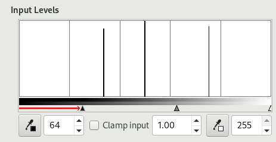
Controle deslizante preto foi movido
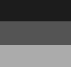
Imagem resultante
-
O controle deslizante branco (destaques) foi movido para o pico de Destaques. O valor 192 se tornou 255 e a faixa de destaques se tornou branca. O controle do Gama (tons médios) é automaticamente movido para o meio do intervalo de tons. Tons médios foram clareados para 169 e Sombras para 84.
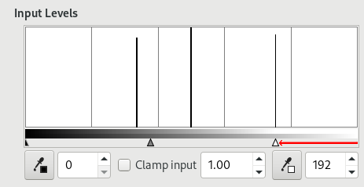
Controle deslizante branco foi movido
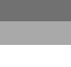
Imagem resultante
-
- Níveis de Saída
-
Output levels allow manual selection of a constrained output level range. There are also numeric text boxes with + and - buttons located here that can be used to interactively change the Output Levels.
Níveis de saída forçam o intervalo de tons a se encaixar nos novos limites que você definiu.
-
Trabalhando com Valor: valores são comprimidos e se parecem mais; assim, o contraste é reduzido. Sombras ficam mais claras: novos detalhes podem aparecer mas o contraste é menor; um comprometimento é necessário. Tons claros ficam mais escuros.
-
Trabalhando com canais de cor: se você usar o canal verde, por exemplo, e definir os níveis de saída entre 100 e 140, todos os pixels com algum verde, mesmo um valor baixo, terão seu valor de canal verde alterado entre 100 e 140.
-
Trabalhando com canal Alfa: todos os valores Alfa são deslocados para o intervalo que você delimitou.
Exemplo para Níveis de Saída
-
A imagem original é um gradiente RGB de preto (0;0;0) para branco (255;255;255). Níveis de Saída não tem histograma; aqui, usamos → → .
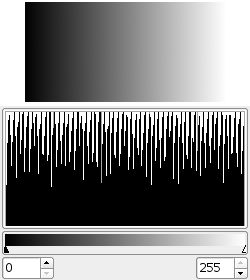
Imagem original (um gradiente)
-
Canal Valor selecionado. O controle deslizante preto foi movido para 63 e o controle branco para 189. O histograma mostra a compressão dos pixels. Nenhum pixel é menor do que 63, nem maior do que 189. Na imagem, Sombras são mais claras e Destaques são mais escuros: contraste é reduzido.
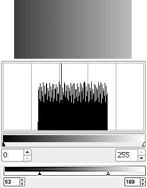
Controle deslizante preto foi movido
-
- Todos Os Canais
-
Auto Input Levels: Performs an automatic setting of the levels.
Three eyedroppers , , . . These three buttons respectively represent a white, a gray and a black eye-dropper. When you click one of these buttons, the mouse pointer takes the form of the eye-dropper it represents. Then, when clicking the image, the clicked pixel determines the white point, the black point or the mid point according to the eye-dropper you chose. Works on all channels, even if a particular channel is selected.
Figura 16.133. Exemplo para os conta-gotas de Níveis
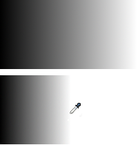
Acima está o gradiente original de preto para branco. Abaixo está o resultado após clicar com o conta-gotas branco: todos os pixels com um valor maior do que o do pixel clicado se tornaram brancos.
- Edite estas configurações como Curvas
-
Para facilitar seu trabalho, este botão lhe permite usar a ferramenta Curvas com as mesmas configurações.
Embora esta ferramenta não esteja presente por padrão na Caixa de Ferramentas (favor consultar Seção 6.13, “Caixa de ferramentas” caso queira adicioná-la), ainda assim ela tem um diálogo de Opção de Ferramentas abaixo da Caixa de Ferramentas.
- Sample average
-
Este controle deslizante define o “raio” da área de captura de cores para obter o valor de cor médio de pixels adjacentes. Esta área aparece como um quadrado mais ou menos aumentado quando você mantém o clique em um pixel.
- Sample merged
-
If you enable this option, sampling is not calculated only from the values of the active layer, but from all visible layers.
For more information, see the Glossary entry.
Figura 16.135. Uma imagem muito subexposta

Imagem original
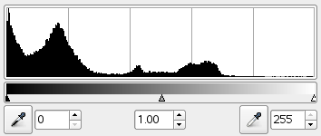
O histograma exibe uma predominância de sombras e tons claros ausentes.
Figura 16.136. Definindo o ponto branco
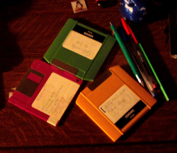
O controle deslizante branco foi movido para o início do bem-definido Destaque (tons claros). A imagem é clareada.
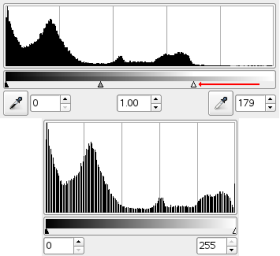
O histograma resultante (abaixo) mostra Tons Claros agora, mas as sombras ainda predominam.
Figura 16.137. Definindo o balanço entre Sombras e Destaques
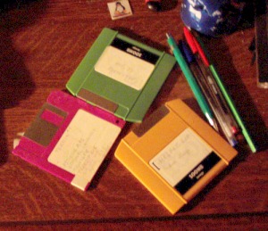
O controle deslizante do meio foi movido para a esquerda. Isto resulta na redução da proporção de sombras e aumento da proporção de tons claros.
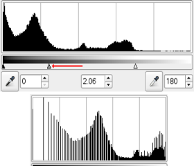
O histograma resultante (abaixo) confirma a redução de Sombras.